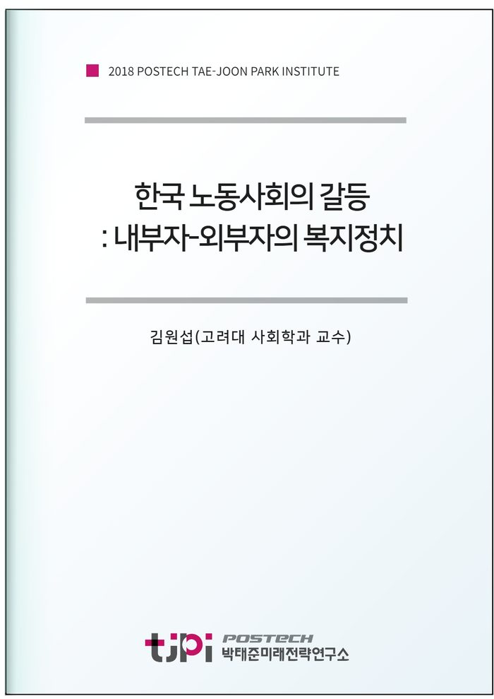

저자 김원섭(고려대 사회학 교수)발간일 2018-11-30

요 약
민주화 이후 한국의 복지제도는 외연적으로 급속히 확장되고 있다. 특히 1998년 이후의 정부들은 정당의 소속과 상관없이 복지정책을 확장하는 개혁을 실시하였다. 그럼에도 불구하고 한국의 빈곤과 불평등은 완화는 기미를 보이지 않는다. 따라서 1998년 이후 형성된 복지체계가 과연 노동시장에서 가장 취약한 계층인 outsiders의 이해를 반영하고 있는지 분석해 볼 필요가 있다.
이 연구는 outsiders에 대한 포용성을 중심으로 한국 복지체계를 진단하고 이의 개선 방향을 제시하고 자 한다. 특히 복지체계의 형성을 둘러싼 정규직 노동자(insiders)와 비정규직, 자영업, 비경제활동인구(outsiders)의 갈등 관계를 분석하고자 함. 이를 통해 한국 복지국가의 포용성을 강화하는 방향을 제시하고자 한다.
목 차
1. 서론
2. 복지국가의 정치학
1) 보편적 복지국가와 복지동맹
- 보편적 복지국가의 발전
- 복지국가 발전과 복지정치
2) 복지국가 위기와 복지이원주의의 정치역학
- 복지국가의 위기
- 복지국가의 이원주의
- 이원주의 시기의 복지동맹
3. 한국 복지국가의 기원: 발전주의 복지국가
- 발전주의 복지국가의 특징
- 복지이원주의의 형성
4. 민주화 이후 복지국가의 형성과 한계
1) 동아시아 외환위기 이후 복지국가 형성: 국가목표와 복지제도
2) 보편적 복지제도의 형성과 한계: 김대중정부와 노무현정부의 복지정책
3) 보수주의 정권의 복지정책
4) 복지 확대의 한계: 복지이원주의의 재생산
5. 복지개혁을 둘러싼 정치연합의 형성: 복지연합의 성격
6. 결론
참고문헌
내 용
[2018 연구논문] 한국 노동사회의 갈등: 내부자-외부자의 복지정치
김원섭(고려대 사회학 교수)
원문은
미래전략연구총서 11
막힌사회와 그 비상구들]로
발간되었습니다.